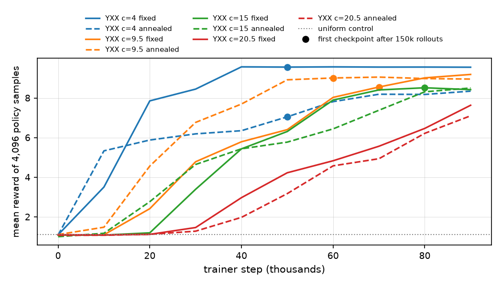
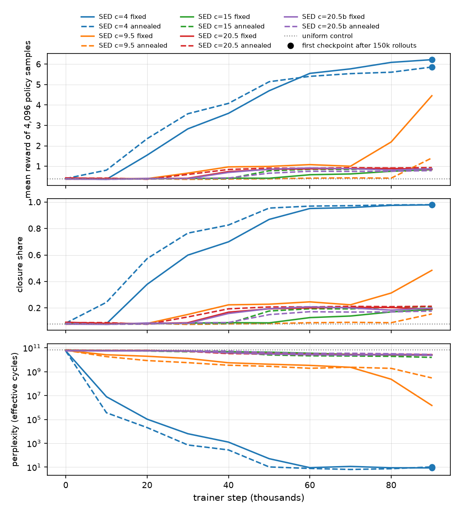
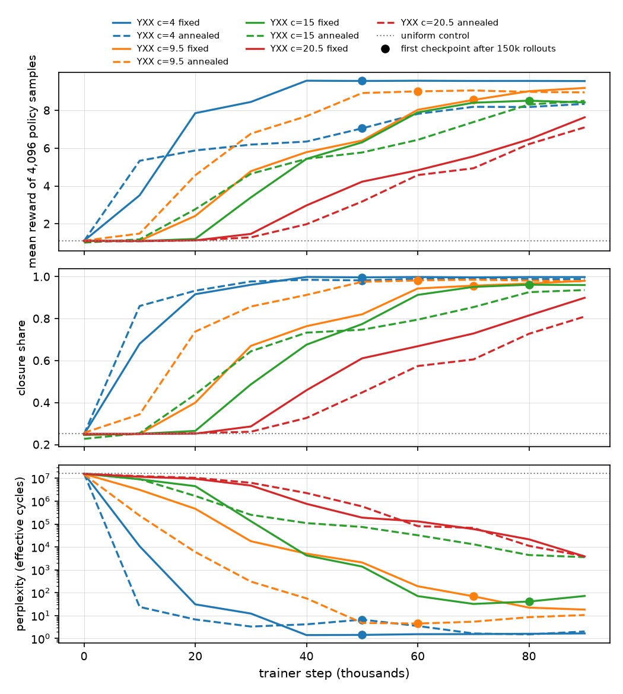
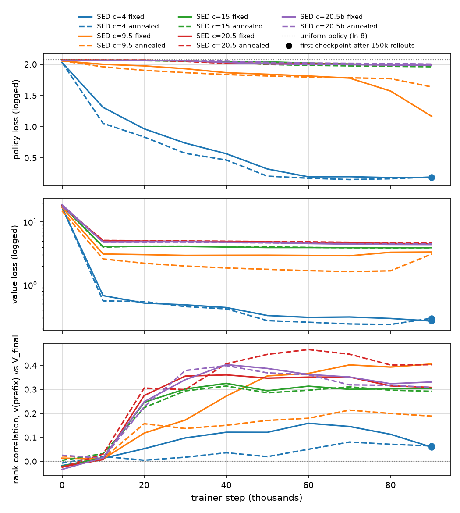
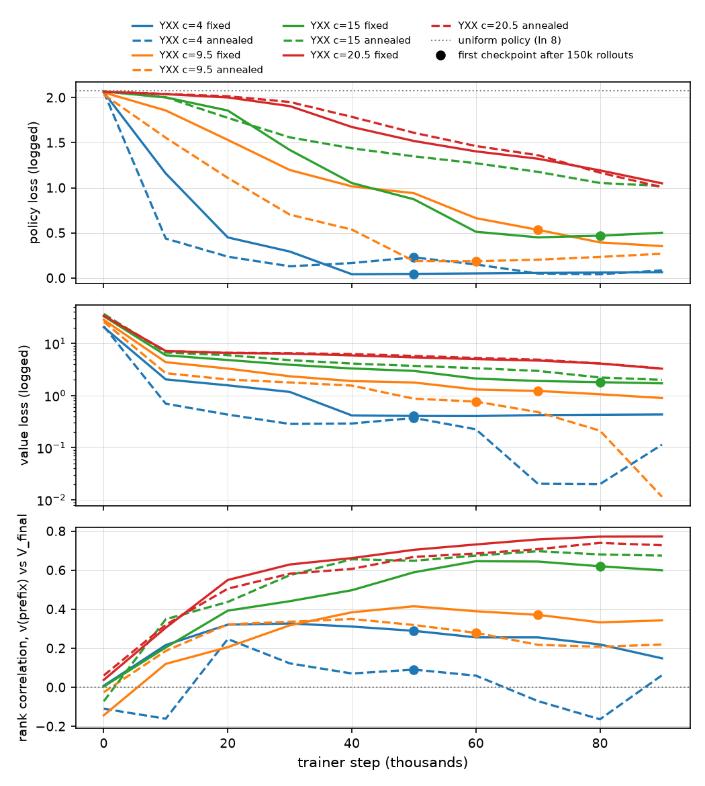
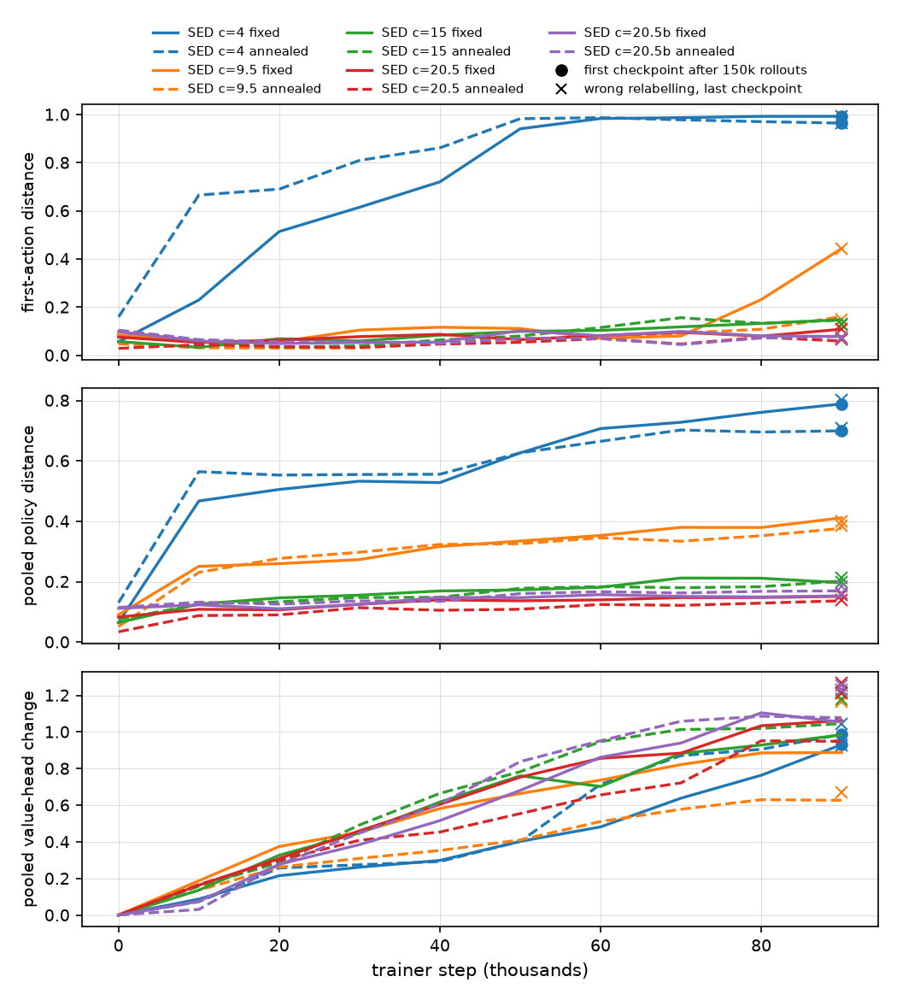
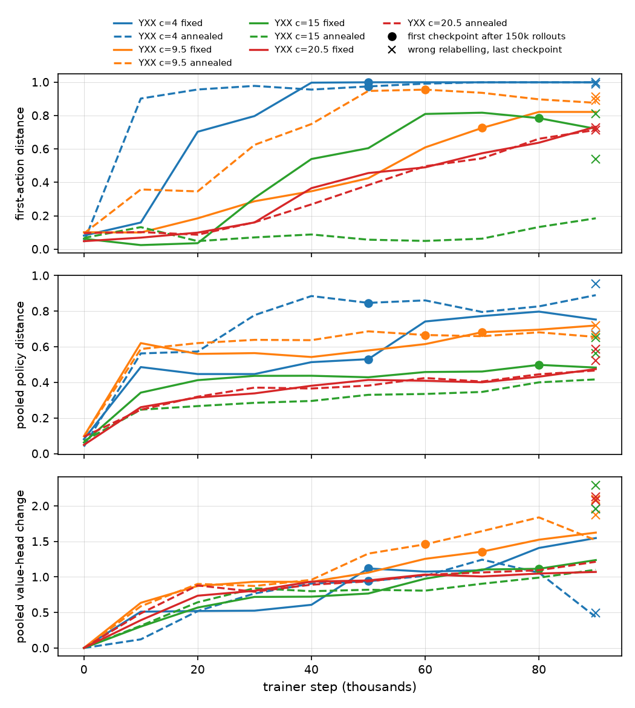

Many spins packed into a solid make a sensitive sensor, and the same spins disturb one another, so their coherence is short. That coupling, plus a slightly different local field at each spin, erases a spin qubit or memory within a fraction of a millisecond. A timed train of pulses can cancel these effects. A memory needs all of them cancelled together, and our score asks for exactly that. The classic sequences were designed by hand. We built a search that designs such sequences, ran it 18 times, and tested what it found against the standard ones in simulation. Three sequences we assembled from pieces it found beat every standard sequence in those tests. The search runs below.
- 18search runs
- 69 billionpossible cycles
- 300 thousandcycles tried per run
- 7spins in the final test
1The problem
Three things disturb the spins of a solid in a strong magnetic field: their magnetic dipolar coupling, a local field that differs slightly from site to site (the chemical shift, whose spread we call disorder), and a drive never exactly on resonance (the offset). A well-chosen train of 90-degree pulses averages them away over one cycle. WAHUHA did this first for the coupling, MREV8 made it robust, and CORY48 cancels all three. Real pulses are imperfect: they take time (the spins keep evolving during the 1 microsecond pulse), the turn is off by a small fraction (rotation error), and each starts and ends with a small turn about the wrong axis (phase transient). A useful sequence must tolerate all of this at weak and at strong coupling, so we test both.
Illustration
The illustration appears here once the page has loaded.
We turned the design into a search over cycles of 12 blocks from an alphabet of 8, about 69 billion cycles (SED in the figures). Each block is two 90-degree pulses, each followed by a short free interval, then a longer wait; it fills three windows of 3 microseconds, and a cycle lasts about a tenth of a millisecond. A cycle is scored by how faithfully it returns the spins to where they started, averaged over five random spin systems. The reward is minus the base-10 logarithm of the infidelity, so 4 means an error of one part in ten thousand. Each point higher means ten times less error. The search scores on 3 spins, which is cheap; every candidate is re-scored on 7 spins with control errors and disorder.
One of the 8 blocks: a pulse about x, a pulse about y, then a wait.
2The physics
A spin-1/2 in a strong magnetic field along z precesses about it at the Larmor frequency . In a solid each spin also feels the magnetic dipole of every other spin, and a slightly different field of its own, the chemical shift. At high field only the part of the dipole coupling that commutes with the precession survives, the secular part, and the internal Hamiltonian of N spins is
where is the spin operator of spin i, its shift, and the coupling falls as the inverse cube of the distance between the two spins and vanishes when the line joining them makes the magic angle with the field. This Hamiltonian is what puts the spins out of step: each precesses at its own rate, and the coupling mixes every pair, so a state prepared across the spins loses its coherence.
The pulses are a transverse field oscillating near . In the frame rotating at the pulse frequency the fast precession drops out, the Zeeman term leaves only the offset between the pulse frequency and , and a pulse is a steady field along x or y that turns every spin at once:
The simulator writes the same Hamiltonian with Pauli matrices , draws the coefficients at random around the stated values instead of placing spins in space, and draws the offset once per ensemble member:
with , and . The Hz values in the Notes are these coefficients.
A 90-degree pulse about the axis a is a finite rotation. The spins' own Hamiltonian keeps acting during it, a rotation error makes the turn slightly too large, and a phase transient adds a small turn about the other transverse axis at each end:
where is the collective spin along the pulse axis, the collective spin along the other transverse axis and the pulse width. Between pulses the spins evolve freely under . A block is two such pulses, each followed by a free interval, then a free window, as in the sketch above.
A cycle of blocks multiplies to one propagator U. Its score is the average gate fidelity to the identity on N spins, ,
with the mean over the ensemble members. A cycle with U = 1 for every member returns any state of the spins to where it started, whatever the couplings and shifts, which is the whole task of a memory. The search looks for the cycle with the largest R among the , on 3 spins without errors while searching and on 7 spins with the errors afterwards (settings in the Notes). The pulses manage this the way the illustration shows: each turn changes the axis along which the spins see every term of , and over a cycle that sends the field along the six directions the terms average away, up to what the finite pulses and the next order of the average leave behind.
3A live search
Press Start and the search builds a twelve-block cycle in your browser with the 3-spin physics we trained on. The network was trained beforehand and stays fixed while the search runs.
Live search
The live search appears here once the page has loaded.
4Why a search is needed
We scored three thousand random cycles, mutants of the best and most-visited cycles, and the search's candidates (Figure 2). Most random cycles do not close (their pulses leave a net rotation) and score near zero. Above an empty band, the closed cycles spread over a plateau near 3. Most candidates cluster above 8, where no random cycle or mutant appears; the rest lie between about 5 and 7.
Good cycles are isolated. One changed block drops every sampled mutant of a top cycle to the bottom, and two or more changes rarely clear the plateau (Figure 3).


5Approach 1: reinforcement learning
Reinforcement learning has designed such sequences before; that search produced the reference YXX24. We used a single-player version of AlphaZero. At each decision a tree search of 500 simulations explores continuations of the cycle, guided by a small network whose policy head proposes the next block and whose value head estimates the final reward; the next block is drawn from the visit counts. The simulator scores the finished cycle; the score and the visit counts train the network. One trainer updates the network while seven collectors produce cycles (Figure 4).
We ran the loop 18 times, varying the alphabet (SED, or YXX with 8 three-pulse blocks to a cycle), the exploration constant c (4, 9.5, 15 or 20.5) and the temperature (fixed, or annealed in the second half). Each run made about 300 thousand rollouts while the trainer took 100 thousand steps; on SED from c=9.5 up the trainer finished in the first half, so most of their cycles came from a network that no longer changed.
Figures 5 and 6: training curves


6What the network learned
We looked at each run's last saved network. On SED, at c=4 the policy is a lookup table of about ten cycles that close and score well. At c=9.5 it puts part of its weight on one cycle and its rotated copies and spreads the rest. From c=15 up it has learned only to close its cycles: about a fifth close, against a twelfth of random cycles, and they score like random closed ones. On YXX every policy learns to close its cycles and concentrates near the top of the spectrum (Figure 9).
The value head forecasts the reward the final network's own search reaches (Figure 10). The rank correlation is about 0.2 to 0.4 on SED from c=9.5 up, below 0.1 at c=4, and 0.6 to 0.8 on YXX at c=15 and 20.5.
Turning all the pulse axes together about the field leaves a cycle's score unchanged. The policies that concentrated on a few cycles did not learn this; a cycle and its rotated copy get different probabilities (Figure 11).
Figures 8 to 11: what the policy and value head learned








7What the search found
The RL designs are the cycles we kept from each run by a fixed rule; RL design 1 ranks first among them. FunSearch 1 and 2 (Section 8) score level with it on the ranking condition. The archive picks, cycles from the runs' records that fell below our selection cut, score a little lower. We joined the four hand-assembled sequences from pieces the search found; D beats every reference on the ranking condition and the harshest one. The runs also visited SED24, SED24Err, YXX24 and both FunSearch sequences; one run visited YXX24 fifteen times.
RL design 1's edge over the references holds only near the training and ranking conditions. It gains on CORY48 at low disorder and intermediate coupling and loses over much of the range of disorder and coupling we mapped (Figure 13). As the windows between pulses widen, SED48 and some of the hand-assembled sequences keep more fidelity than RL design 1 (Figure 15).
Figures 13 to 16: robustness and first appearance in the runs


8Approach 2: FunSearch
The second approach, FunSearch, searches over programs. A language model writes a short program that generates a cycle, and a sandbox runs it on the spin simulator and scores the cycle. The best programs, with a short summary of which unwanted terms their cycles cancel, go back into the next prompt (Figure 17).
A first run of the loop on 3-spin systems produced FunSearch 1 and 2, its two best cycles.
Figure 18: a small run of the loop
9What is next
- A FunSearch run under the same physics, evaluation and budget as the RL search, so the two approaches can be compared on one chart.
- A search whose reward includes disorder and control errors, on more spins, so that the training objective matches the use.
- An equal-budget search without learning, to tell what the network contributed to the discoveries.
The score we rank by asks a cycle to cancel the spins' own interactions, the disorder and the offset on a simulated solid with imperfect pulses. For a spin qubit or memory, which has to hold any state unchanged, that is the whole task. For a sensor it is only the decoupling half: a sensor must also stay responsive to the field it measures, and our target treats that field as one more thing to cancel, so a sensing sequence needs a target of its own.
10Notes
Settings. Figures 12 to 15 use an exact evaluator on 7 spins, 20 ensemble members from one seed and 1 microsecond pulses, over 72 windows of 3 microseconds (Figure 15 varies the window length); Figures 2 and 3 use the same ensemble over one cycle at 1 kHz coupling with no disorder or control errors. Training used 3 spins, 5 ensemble members, 1 kHz coupling, no disorder and no errors. The three conditions, all with the three control errors, are 1 kHz coupling without disorder, 3 kHz with 100 Hz disorder (the ranking condition; Figures 14 and 15 use its disorder and coupling) and 4 kHz with 3 kHz disorder. The control errors are a rotation error of 1.5 percent, a phase transient of 1 percent of a quarter turn on each side of every pulse, and an offset drawn for each ensemble member with a spread of 10 Hz. Couplings have the secular dipolar form between every pair, drawn around the stated value with a quarter of it as spread. The small FunSearch run in Figure 18 used 8-block cycles, one 3-spin system and 2 microsecond windows, and counted a failed program as a random cycle. The live search uses the network saved after 90 thousand trainer steps of one SED run at exploration constant 9.5 and fixed temperature; its second physics setting is the ranking condition. Hz values are model units and carry no factor of 2π. The simulator writes the internal terms with Pauli matrices and the controls with spin-1/2 operators, so the Hz values are the coefficients of the Pauli form in Section 2.
Caveats. Our results here are not yet published. One run per setting (two at c=20.5) and no repeated seeds, so differences between settings are single observations. The margins in Figure 12 are small and measured on one saved ensemble. Everything here is simulated, on 3 or 7 spins with random all-to-all couplings and no lattice geometry. The first FunSearch run used different physics from the RL search: 4 kHz coupling and 3.5 kHz disorder.
References.
- J. S. Waugh, L. M. Huber and U. Haeberlen, Phys. Rev. Lett. 20, 180 (1968). doi:10.1103/PhysRevLett.20.180.
- P. Mansfield, J. Phys. C 4, 1444 (1971). doi:10.1088/0022-3719/4/11/020; W.-K. Rhim, D. D. Elleman and R. W. Vaughan, J. Chem. Phys. 59, 3740 (1973). doi:10.1063/1.1680545.
- D. G. Cory, J. B. Miller and A. N. Garroway, J. Magn. Reson. 90, 205 (1990). doi:10.1016/0022-2364(90)90380-R.
- Peng et al., Phys. Rev. Applied 18, 024033 (2022). doi:10.1103/PhysRevApplied.18.024033.
- Silver et al., Science 362, 1140 (2018). doi:10.1126/science.aar6404.
- Romera-Paredes et al., Nature 625, 468 (2024). doi:10.1038/s41586-023-06924-6.
SED24, SED24Err and SED48 are earlier sequences from our group.